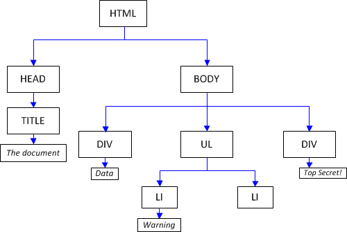

Manipuler le DOM
Le DOM est construit d'éléments HTML
Ici jouons avec l'élément "demoGetInfoDOM"
- Démo pour récupérer les infos du DOM
- Manipuler le DOM se fait grâce à plein de propriétés et méthodes comme celle-ci
Pour obtenir différentes informations de cet élément voici quelques méthodes et propriétés :
- element.getAttribute('attribut') // Permet de récupérer la valeur d'un attribut
- element.style // Permet de récupérer les styles associés à l'élément
- element.classList // Permet de récupérer la liste des classes associées à un élément
- element.innerHTML // Renvoie le contenu HTML de l'élément
- element.innerText // Renvoie le texte "visuellement rendu" de l'élément
- element.textContent // Renvoie le texte de l'élément
ℹ️ On peut voir ces informations retournées dans les logs
Ici jouons avec l'élément "demo2SetInfoDOM" et ses éléments enfants
Modifier des éléments du DOM :
- element.setAttribute('href', 'www.google.fr') //Créé un attribut et lui donne une valeur
- element.style.fontSize = '18px' //Accède à une propriété CSS puis lui donne une valeur
- element.classList.add('red') link--green") //Accède à la list des class puis lui en ajoute
- element.innerHTML = '<p></p>' //Insère et crée du HTML
- element.innerText = 'Bonjour' //Ajoute du texte
ℹ️ On peut voir dans le fichier app.js ce que ces méthodes ont fait dans l'élément DOM "demo2SetInfoDOM" qui suit :
Ici nous allons voir comment traverser le DOM
Un document HTML n'est au final qu'un arbre d'éléments HTML et de noeuds textes qu'il est possible de parcourir de différentes manières. Cet arbre est appellé le DOM.

Quand on récupère un élément dans la page on récupère en fait un noeud dans le DOM. Il est possible de naviguer dans l'arbre à partir d'un élément préalablement récupéré.
Voyons des méthodes permettant de récupérer ou renvoyer des éléments ou des nœuds du DOM :
- element.childNodes // Renvoie tous les nœuds enfant (même les noeuds textes) "object NodeList"
- element.children // Renvoie tous les nœuds éléments "object HTMLCollection"
- element.firstChild // Récupère le premier nœud enfant "object HTMLElement"
- element.firstElementChild // Récupère le premier enfant de type element "object HTMLElement" si pas de nœud texte avant car sinon renvoie null
- element.previousElementSibling // Renvoie l'élément précédant de celui spécifié "object HTMLElement" si pas de nœud texte avant car sinon renvoie null
- element.nextElementSibling // Renvoie l'élément qui vient après celui spécifié "object HTMLElement" si pas de nœud texte avant car sinon renvoie null
Ici une balise <i>(italic) et une balise <b>(bold) ont été placé de sorte de montrer l'usage de "previousElementSibling" et "nextElementSibling"
ItalicDoc MDNGras
MDN veut dire en anglais "Mozilla Developer Network"
Ici nous allons voir comment modifier le DOM
On peut aussi créer et modifier des éléments grâce à différentes méthodes
- element.appendChild(enfant) // ajoute un élément à un autre
- element.append(enfant) // ajoute un élément à un autre
- element.remove() // supprime l'élément du DOM
- parentElement.insertBefore(nouvelElement, refElement)
- parentElement.insertAdjacentHTML('beforebegin', nouvelElement)
Bonjour les gens